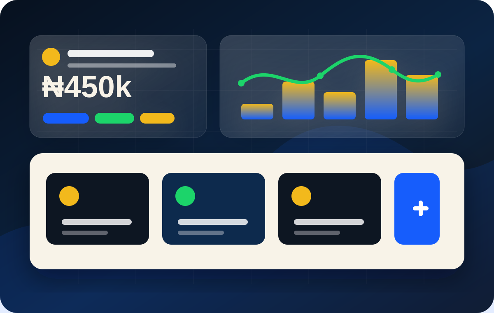
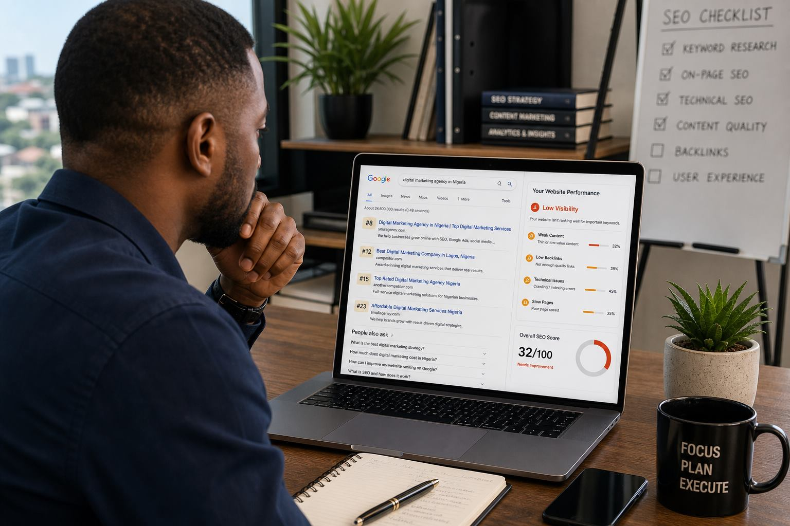
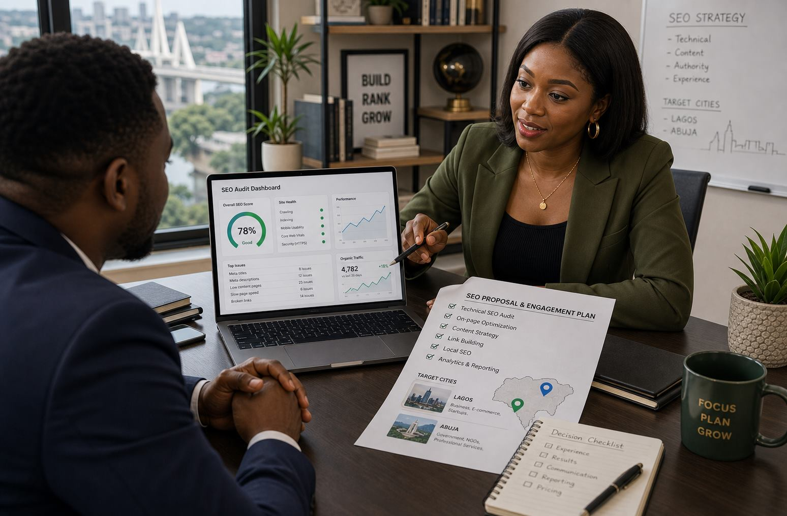

What does this blog talk about?
It covers SEO, website decisions, paid ads, AI workflows, pricing questions, and practical marketing issues that Nigerian brands actually search for.
WTB insights
Written by the WTB team for founders, SMEs, ecommerce brands, creators, and service businesses in Lagos, Abuja, and across Nigeria.
The WTB blog is built to help Nigerian businesses understand SEO, websites, ads, AI marketing, and buyer-intent growth topics clearly enough to act on them and strong enough to rank in search and AI summaries.

Free ads toolUse this free tool to plan your monthly ads budget, platform mix, estimated reach, clicks, and leads before spending.
Use calculator Nigeria buyer guideA practical guide for Nigerian businesses choosing a digital marketing agency without wasting money on noise, vanity metrics, or disconnected channels.
Read guide Nigeria AI buyer guide
Nigeria AI buyer guideA practical guide for Nigerian businesses choosing an AI marketing agency without getting distracted by hype, jargon, or empty automation promises.
Read guide Lagos AI buyer guide
Lagos AI buyer guideA practical guide for Lagos businesses choosing an AI marketing agency without getting distracted by hype, jargon, or generic tool talk.
Read guide Abuja AI buyer guide
Abuja AI buyer guideA practical guide for Abuja businesses choosing an AI marketing agency without getting distracted by hype, jargon, or empty automation talk.
Read guide Lagos AI pricing
Lagos AI pricingA practical guide for Lagos businesses budgeting for AI-assisted strategy, content, SEO, ads, websites, automation, and growth support.
Read guide Abuja buyer guide
Abuja buyer guideA practical guide for Abuja businesses choosing a digital marketing agency without wasting money on vague promises or disconnected channels.
Read guide Creator economy Nigeria
Creator economy NigeriaA grounded look at why creator marketing is growing while too many brand deals still feel chaotic, weakly structured, and hard to measure.
Read guide AI search shift
AI search shiftA practical guide to what Nigerian businesses should do now as AI Overviews and AI Mode reshape visibility, clicks, and trust.
Read guide Creator strategy shift
Creator strategy shiftA practical guide to why longer-term creator relationships are becoming more useful than one-off influencer posts.
Read guide Creator economy debate
Creator economy debateA sharp guide to creator pricing, audience fit, trust, and how to stop paying premium money for premium noise.
Read guideLagos pricingA practical guide for Lagos businesses budgeting for strategy, content, SEO, ads, websites, and agency support.
Read guide Abuja warning signs
Abuja warning signsA practical warning-sign guide for Abuja businesses choosing an agency and trying to avoid expensive confusion.
Read guide Lagos buyer guide
Lagos buyer guideA practical guide for Lagos businesses choosing an agency for strategy, SEO, content, paid traffic, websites, and growth structure.
Read guideAbuja buyer guideA practical guide for Abuja businesses choosing an agency with clearer strategy, stronger trust signals, and better conversion thinking.
Read guide Budget strategy
Budget strategyA practical ad-budget guide for Nigerian brands choosing between search demand capture and social demand creation.
Read guide Visual discoveryA sharp guide for ecommerce brands that want better discovery, stronger product visuals, and more mobile-first trust.
Read guide Trending AI workflow
Trending AI workflowA timely guide for brands that want better replies, cleaner qualification, and more sales from WhatsApp conversations.
Read guide
Ranking diagnosisA direct breakdown of the page, trust, local SEO, and technical issues stopping Nigerian websites from showing up properly.
Read guide
SEO hiring guideA buyer-intent guide for businesses comparing SEO support, pricing, deliverables, and warning signs.
Read guide Website pricing
Website pricingA clear breakdown of what affects website pricing, from basic pages to ecommerce, SEO, and custom domain setup.
Read guide SEO pricing
SEO pricingA practical pricing guide for SEO audit, monthly SEO, content, local SEO, and competitive search work.
Read guide Social media pricing
Social media pricingA guide for brands comparing social media management, content creation, paid ads, and campaign reporting.
Read guideService guideA focused service page for Abuja brands comparing AI-assisted marketing support and execution systems.
View pageQuick answers
It covers SEO, website decisions, paid ads, AI workflows, pricing questions, and practical marketing issues that Nigerian brands actually search for.
It is written for Nigeria first, with local business context, Lagos and Abuja relevance, and examples that match how Nigerian buyers discover and decide.
Yes. Each article is built to help you understand the issue, compare options, and take the next practical step whether you do it yourself or ask for support.
Need help now?
Send your website, business goal, location, and budget. We will recommend the next practical SEO or marketing step.